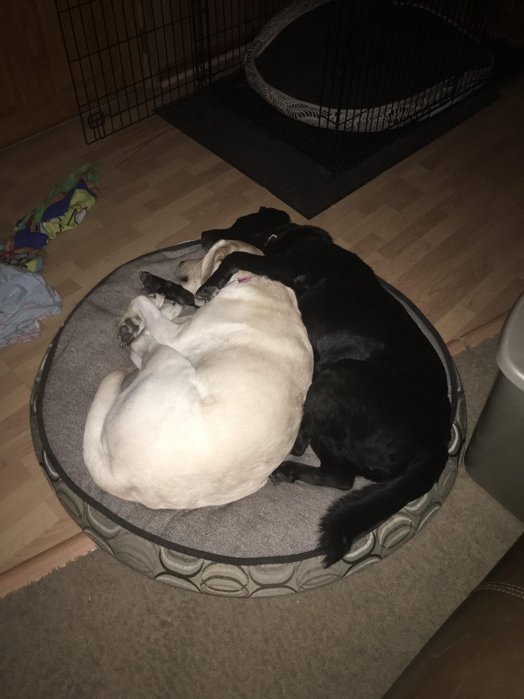

I am urrently in the Master's Program for Information Technology at the
Illinois Institute of Technology. Outside of school, I enjoy spending
my time either with family, playing hockey, or playing video games.
Spending my Free Time
My Dogs
My two dogs provide me with endless amounts of entertainment. Fiona is
a ten year old black Labrador Retriever. Lucy is a four year old yellow
Labrador Retriever. These two are inseparable, as seen by the picture
of them laying together. This is a common occurence in my house. The
two of them could play in the yard for hours whether that time is
spent chasing a ball or just chasing each other.

Lucy and Fiona laying together
These two provide their fair share of trouble around the house also.
Lucy enjoys being bad. She will grab food off of the counter or go on
to couch when she should not be up there. But who can get mad at that
face?
Fiona likes to be rude and pushy when it comes to things she wants. She
will bark incessantly until she gets a cookie (the previous
Labrador Sophie taught her that trick). Other than that, she does not
do any wrong. This dog loves your attention and will go to great
lengths to get it. She will even chew up a kleenex if Lucy is getting
in trouble so that she can "get in trouble" also.
Video Games
I have always been drawn to technology, specifically video games, since
I was young. My gaming career started with Pokemon Red on the Gameboy
Color. I spent many hours in the Pokemon world as I grew older (and
still play today).
These days, I play mostly Destiny. I also play some No Man's Sky,
Player Unknown's Battlegrounds, and Zelda: Breath of the Wild. Being
able to play in different universes as characters that are out of
this world is something that I truly enjoy. That is why I can see
myself working for a video game company some day.